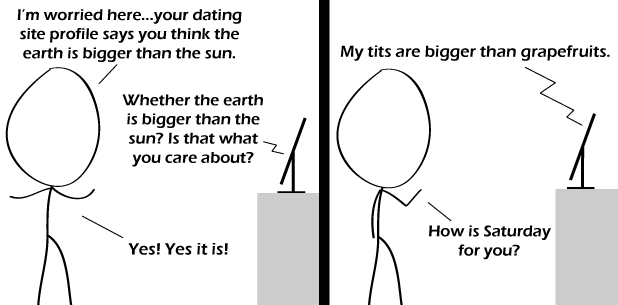

Comic JK 662
When I Feel Like It
⇤
<
?
>
⇥

⇤
<
?
>
⇥
Forum
.
RSS
.
Digg
.
Facebook
.
Reddit
.
Twitter
.
Stumbleupon
Enter your thoughts on number 662 here. Please, no spamming, trolling, phreaking, or Sky & Telescope centrefolds. He must be talking to your mother. Give us pictures given the comparison from the first scene, I wouldn't have my hopes up for grapefruits.. >More like... peas. >> More like a fat, balding middle-aged construction worker in a wifebeater that hasn't been washed for over 10 years. comicjk, my #1.5 source for xkcd humor. (I measured it with a humormometer) >you mormon eater? >> #1.5? >>>#3-4i WOOOOOOOOOOOOOO! >STOP IT. >>WOOOOOOOOOOOOOO! >>>BWOOOOOOOOOOOOOOOOOOOOOOOOOO! >>>>Cupcakes, cupcakes cupcakes, CUPCAKES! This is so real! Totally like OKC questions. >For those of you who don't know, this is an actual question on OKCupid, and a useful one at that. Yes, there are actually people who say "The Earth," but I can never decide if they're just kidding. >>or perhaps time-travellers who have yet to get up to date... ? I... I... I don't get it... >the two people are clearly keen ornithologists: the person on the profile has successfully reared several birds of the family Paridae, and the man is hoping to view several specimens of Parus major... >>Wow, I didn't expect anyone else to get that. Is he *talking* to the computer monitor? >>I assumed it was an IM with webcam with sound; many LCD monitors have ( very bad ) mini-speakers, after all...